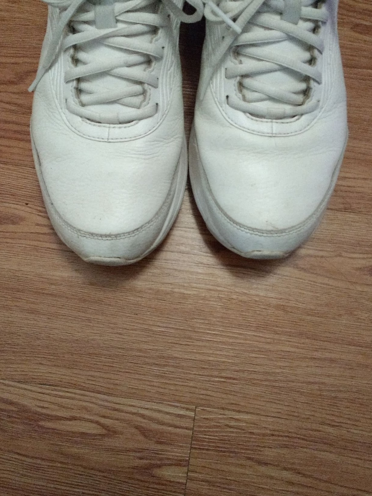

I am a (1 year) RTG postdoctoral researcher at the University of Oregon. I completed my PhD in Mathematics at the University of Michigan under the supervision of Sergey Fomin.
My research interests include quiver mutation, combinatorics, theoretical machine learning, and most everything discrete and computational.
Research
Click a title for a summary, coauthor information, and additional artifacts.
 Eventual sign coherence
Paper
Eventual sign coherence
Paper
Related Links
- Slides.
- [Gekhtman-Nakanishi 2019]. the paper which introduced the conjecture.
We subsantially resolve the Asymptotic sign coherence conjecture of Gekhtman and Nakanishi, which states that if you take a quiver with frozen vertices and mutate long enough, then it will eventually satisfy the sign coherence phenomena (which states that each mutable vertex is either a source or a sink with respect to all of the frozen vertices). We do this by introducing a new class of quivers, called BROG. We also resolve the asymptotic sign coherence conjecture for mutation abundant (always at least 2 arrows between the mutable vertices) 3-vertex quivers.
 Mutation invariants of (cyclically ordered) quivers
Paper
Mutation invariants of (cyclically ordered) quivers
Paper
Related Links
- [Fomin-Neville 2024] Advances of Mathematics publication
- [Neville 2024] showing acyclic are totally proper.
- [Neville-Thomas 2026+] showing skew-symmetrizable (in prep)
- Slides
- Python code for computing many mutation invariants, joint with Tucker Ervin
A cyclically ordered quiver is a quiver endowed with an additional structure of a cyclic ordering of its vertices - one might imagine drawing the vertices of the quiver on the unit circle. This structure, which naturally arises in many important applications, gives rise to new powerful mutation (semi) invariants. The invariants we find are truly mutation invariants when the cyclic ordering is 'totally proper,' we describe several families of quivers with totally proper cyclic orderings.
For quivers coming from divides, the most natural cyclic ordering leads to the Alexander polynomial of the associated knot.
I resolved an important conjecture from this paper in the follow-up. I showed that all acyclic quivers are totally proper, and thus we have new necessary conditions for a quiver to be mutation equivalent to an acyclic one. This relies heavily on a construction by Ahmet Seven.
Additional follow-up, in preperation with Hugh Thomas, extended cyclically ordered quivers to skew-symmetrizable matrices. Preprint in preperation.
With Tucker Ervin, I developed python code for many mutation invariants, including several from this project.
 Long Mutation Cycles
Paper
Long Mutation Cycles
Paper
Related Links
This project studies mutation cycles in quivers.
We prove the existence of arbitrarily long cycles
on n vertices for every fixed n ≥ 4 and construct
large parameter families exhibiting strong rigidity
properties.
Follow-up work with Tucker Ervin showed how this construction is part of a huge family of long mutation cycles, which can be formed by arbitrary triangular extensions of quivers with reddening sequences. This publication includes a large zoo of new, strange examples.
 Directed Polymers
Paper
Directed Polymers
Paper
Related Links
In the directed polymer model, we have two different kinds of randomness being played against each other. First, we have the environment, consisting of random weights on the points in a lattice, which we resample independently after each time step. Second, a random walk, which has some preferred distribution of next 'steps' on the lattice. The model produces a distribution on the possible resulting walks from the origin, where the walk is biased by the random environment based on a parameter (the temperature).
In dimension 1, the directed polymer model is in the celebrated KPZ universality class, and for all positive temperatures, a typical polymer path shows non-Brownian KPZ scaling behavior. In dimensions 3 or larger, it is a classical fact that the polymer has two phases: Brownian behavior at high temperature, and non-Brownian behavior at low temperature. We consider the response of the polymer to an external field or tilt, and show that at fixed temperature, the polymer has Brownian behavior for some fields and non-Brownian behavior for others. In other words, the external field can induce the phase transition in the directed polymer model.
 (Not) explaining neural networks with symmetry
Paper
(Not) explaining neural networks with symmetry
Paper
Related Links
Neural networks often outperform intentionally designed programs for many 'real world' tasks. A natural question is if we can use a trained neural network to find a more classical algorithm in reasonable time. One theory was that neural networks work by extracting and removing invariants of the data. This begs a computational question: what are some transformations of the input data which do not change a neural networks output. We show this is generally infeasible, in the sense that determining if a neural network is invariant to some permutation of the inputs is NP-hard (even under loose definitions of invariant).
 m-ary partitions with m-ary constraints
Paper
m-ary partitions with m-ary constraints
Paper
Related Links
The 1983 Putnam competition included a problem which asked about the number of partitions with only 2^k parts (binary partitions) with each part used at most 3 (=2^2-1) times. We generalize this to m-ary partitions (so parts m^k) with each part used at most m^j -1 times. Generating functions are very up to this task, and reveal a cute symmetry. One can interchange the roles of k and j. We give a bijection to explain this symmetry, based on a classical transposition argument for partitions with bounded sizes vs bounded number of parts. (Color the boxes and read backwards!)
Story: Timothy Flowers gave a short talk on the problem and generating function results at an AMS mathfest. I thought the problem fun, and found a bijection to explain their results over lunch.
Positions
- RTG Postdoc, 2026-2027, University of Oregon, mentored by Patricia Hersh
- Semester Postdoc 2026, LACIM, mentored by Hugh Thomas
- Semester Postdoc 2025, ICERM, mentored by José Simental
Education
- PhD in Mathematics, University of Michigan, advised by Sergey Fomin
- Part III Mathematics, University of Cambridge, advised by Tom Fisher
- BS in Mathematics and Computer Science, University of Utah, advised by Suresh Venkatasubramanian
- Associate Degree, Weber State University
Awards and Honors
Links to others
If you enjoy my work, you may like things from these folks!
(these links are quite likely to break; please let me know if you notice)Miscellaneous
How I appear to extroverted mathematicians

"The difference between an introvert and extrovert mathematician is: An introvert mathematician looks at their shoes while talking to you. An extrovert mathematician looks at your shoes. "
Accessibility feature suggested by Lukas Scheiwiller .
A photo that I own the rights to
"They are really sleeping on you for that Field's medal"
— Olivia Strahan
"That was an amazing talk. You can tell Sergey I like your trench coat."
— Bruce Segan